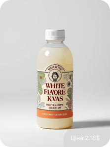

Смак, який пережив час
Квас — це натуральний ферментований напій, який підтримує травлення та мікрофлору кишечника.
Він містить вітаміни групи B і дає легкий тонус без кофеїну. Ідеально для тих, хто хоче щось смачне, але без хімії.

Історія
Колись дуже давно — ще понад тисячу років тому — на території Київської Русі люди випадково відкрили квас.
Уяви: хтось залишив шматок житнього хліба у воді, він трохи “забродив”… і вийшов освіжаючий напій із легким газом.
І замість того, щоб викинути — його спробували. І такі: “Ого, це ж смачно!” 😄 Так почалася історія квасу


-
1. Обери свій квас
Знайди смак, який тобі заходить — класичний, фруктовий або щось експериментальне.
-
2. Оформи замовлення Додай у кошик, введи дані та підтвердь — це займе менше хвилини.
-
3. Насолоджуйся смаком